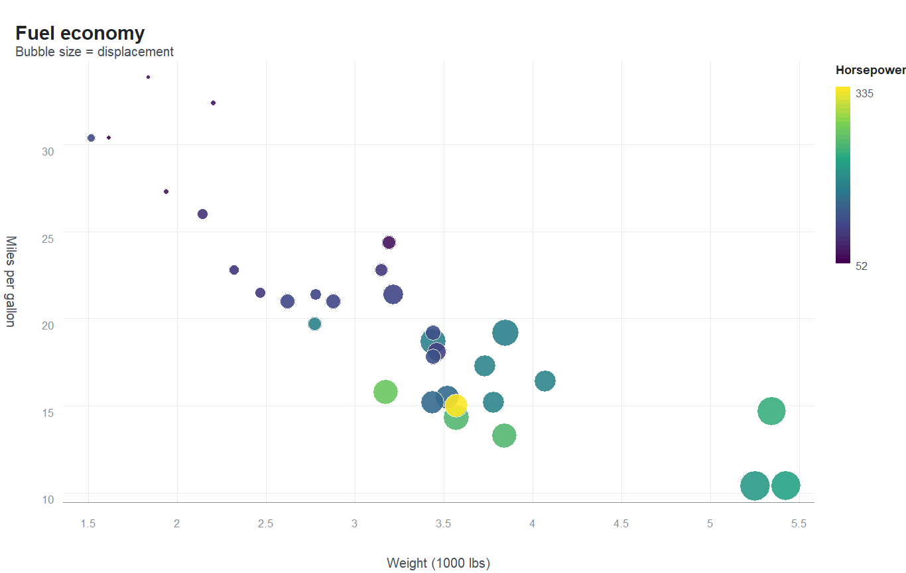
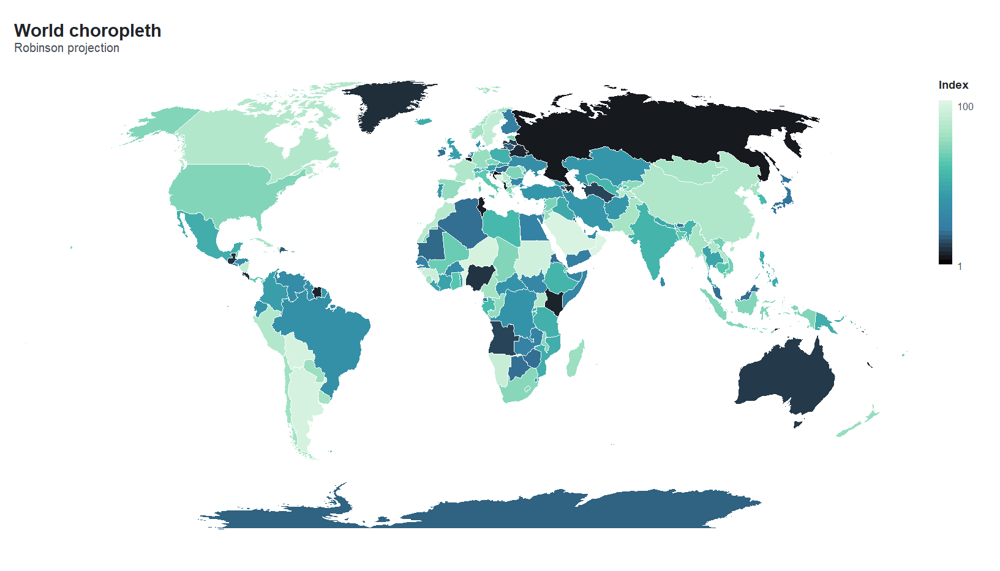
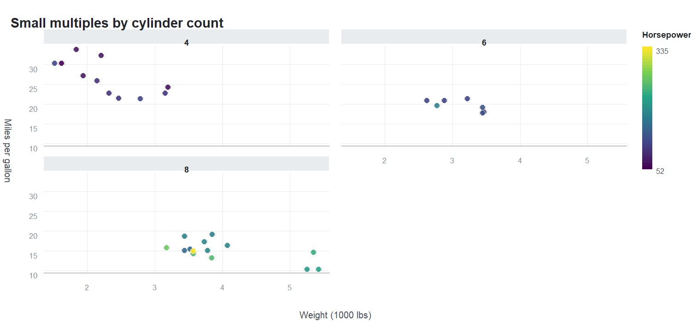

A layered grammar of graphics for R that is interactive by default, sharp at any resolution, and knows the world map.
orbis builds a plot from a grammar you already recognise, but instead of committing to one output it compiles the plot to a resolution-independent scene description and hands that to two renderers:
- a self-contained SVG writer with embedded JavaScript — tooltips, hover highlighting, mouse-wheel zoom, drag to pan, and clickable legend keys, with no JavaScript library and no internet connection required;
- R’s own graphics devices — publication-quality PNG, TIFF or PDF at any resolution you ask for.
Geography is not an add-on. A simplified world polygon dataset ships with the package, and six map projections — including Equal Earth and an orthographic globe — are built in.
Installation
# install.packages("remotes")
remotes::install_github("mqfarooqi1/orbis")orbis imports only base R packages plus htmltools.
A first plot
library(orbis)
orb(mtcars, x = wt, y = mpg, colour = hp, size = disp) +
orb_points() +
orb_labs(title = "Fuel economy", x = "Weight (1000 lbs)",
y = "Miles per gallon", colour = "Horsepower")
The world, built in
orb_worldmap(values = gdp, value_col = "v", projection = "robinson",
palette = "mako") +
orb_labs(title = "World choropleth")
Switch one argument for a globe:
orb_worldmap(values = gdp, value_col = "v", projection = "orthographic",
palette = "ember", ocean = "#0B1F33") +
orb_coord_map("orthographic", centre = c(25, 20)) +
orb_theme_dark()Projections available: equirectangular, mercator, robinson, mollweide, equalearth (the modern equal-area projection of Savric, Patterson & Jenny) and orthographic. Points can be placed on any of them with orb_geo_points().
Small multiples
orb(mtcars, x = wt, y = mpg, colour = hp) +
orb_points() +
orb_facet(cyl) +
orb_labs(title = "Small multiples by cylinder count")
Panels share their scales by default, so they are directly comparable; pass scales = "free" (or "free_x" / "free_y") to let each panel stretch to its own data. Colours and sizes are always resolved across the whole data set, so a value means the same thing in every panel.
Interactive, then print-ready — from one object
The same plot object produces both. Nothing is re-specified:
p <- orb(mtcars, x = wt, y = mpg, colour = factor(cyl)) + orb_points()
orb_interactive(p) # opens in the viewer: hover, zoom, pan
orb_save(p, "figure.png", dpi = 600) # 600 dpi raster for print
orb_save(p, "figure.pdf") # vector
orb_save(p, "figure.svg") # vector, and still interactive
orb_save(p, "figure.html") # a self-contained interactive pageIn the interactive output you can hover for a tooltip, scroll to zoom, drag to pan, double-click to reset, and click a legend key to hide or show that series.
What is in it
| Function | Purpose |
|---|---|
orb() |
Start a plot: data plus a mapping from variables to channels |
orb_points(), orb_line(), orb_bars(), orb_area(), orb_text()
|
Layers |
orb_map(), orb_geo_points(), orb_worldmap()
|
Geographic layers |
orb_coord_map() |
Six map projections, including Equal Earth and an orthographic globe |
orb_facet() |
Small multiples: one panel per level, shared or free scales |
orb_scale_colour(), orb_scale_fill(), orb_scale_size(), orb_scale_x(), orb_scale_y()
|
Scales, limits, log and square-root axes |
orb_theme_light(), orb_theme_dark(), orb_theme_minimal(), orb_theme_ink()
|
Themes |
orb_save(), orb_svg(), orb_interactive(), orb_draw()
|
Output |
orb_palettes() |
Perceptually uniform and qualitative palettes |
world_map |
Simplified world polygons, 229 regions |
Honest limitations
orbis is young, and it is not a drop-in replacement for a mature plotting package. In particular:
- No statistical layers. There is no smoother, no boxplot and no histogram geometry; summarise your data first.
- Text metrics are approximated when laying out axes and legends, because the SVG writer does not query a font engine. Very long labels can be spaced imperfectly.
- The world map is deliberately simplified for figure-sized output. For detailed cartography, or for anything requiring a coordinate reference system, use a dedicated spatial package.
References
- Wickham, H. (2010) “A Layered Grammar of Graphics.” Journal of Computational and Graphical Statistics 19, 3-28. doi:10.1198/jcgs.2009.07098
- Šavrič, B., Patterson, T. & Jenny, B. (2019) “The Equal Earth map projection.” International Journal of Geographical Information Science 33, 454-465. doi:10.1080/13658816.2018.1504949
- Crameri, F., Shephard, G. E. & Heron, P. J. (2020) “The misuse of colour in science communication.” Nature Communications 11, 5444. doi:10.1038/s41467-020-19160-7
- Snyder, J. P. (1987) Map Projections: A Working Manual. US Geological Survey Professional Paper 1395. doi:10.3133/pp1395
- Douglas, D. H. & Peucker, T. K. (1973) “Algorithms for the reduction of the number of points required to represent a digitized line or its caricature.” Cartographica 10, 112-122. doi:10.3138/FM57-6770-U75U-7727
World boundaries derive from Natural Earth (public domain), via the maps package.
MIT licensed. Muhammad Farooqi.